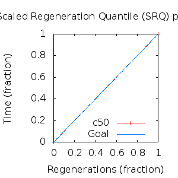
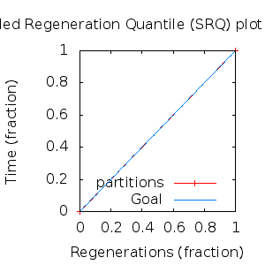

MCMC Post-hoc Analysis: 4 sequences
Data & Model
| Partition | Sequences | Lengths | Alphabet | Substitution Model | Indel Model | Scale Model |
|---|
| 1 |
E5_delta_aa.fas |
43 - 44 |
Amino-Acids | S1 = lg08+f |
I1 = rs07 |
scale1 ~ gamma[0.5,2] |
Scalar variables
| Statistic | Median | 95% BCI | ACT | ESS | burnin | PSRF-CI80% | PSRF-RCF |
|---|
| prior |
-30.87 |
(-42.49, -20.84) |
24.22 |
11146 |
553
|
1 | 1.002
|
| prior_A1 |
-8.003 |
(-11.93, -6.272) |
2.032 |
132870 |
78
|
0.9999 | 0.9994
|
| likelihood |
-256.5 |
(-262.9, -251) |
7.127 |
37882 |
178
|
1 | 1.002
|
| posterior |
-287.7 |
(-300.4, -276.4) |
23.48 |
11500 |
403
|
1 | 1.001
|
| Heat.beta |
1 |
| | | | | |
| Scale[1] |
0.8374 |
(0.1726, 2.504) |
1.039 |
259809 |
81
|
0.9998 | 0.9998
|
| f:pi[A] |
0.04336 |
(0.009501, 0.08938) |
8.928 |
30241 |
428
|
1 | 0.9958
|
| f:pi[R] |
0.0317 |
(0.00381, 0.07433) |
9 |
29999 |
683
|
1.001 | 0.9999
|
| f:pi[N] |
0.007006 |
(1.031e-06, 0.02974) |
12.83 |
21041 |
494
|
0.9989 | 0.9936
|
| f:pi[D] |
0.05243 |
(0.01114, 0.11) |
8.835 |
30559 |
346
|
0.9996 | 0.9985
|
| f:pi[C] |
0.03043 |
(0.003584, 0.07048) |
8.889 |
30373 |
460
|
0.9998 | 0.999
|
| f:pi[Q] |
0.0301 |
(0.003374, 0.07027) |
9.173 |
29434 |
728
|
1 | 0.9991
|
| f:pi[E] |
0.01942 |
(0.0006027, 0.05395) |
10.28 |
26275 |
613
|
0.9994 | 1.007
|
| f:pi[G] |
0.0231 |
(0.0006879, 0.06389) |
10.09 |
26765 |
264
|
1 | 0.9987
|
| f:pi[H] |
0.03127 |
(0.003721, 0.07317) |
8.984 |
30054 |
716
|
0.9997 | 0.9978
|
| f:pi[I] |
0.0229 |
(0.002978, 0.055) |
9.438 |
28608 |
522
|
0.9995 | 1.004
|
| f:pi[L] |
0.1823 |
(0.1085, 0.2664) |
7.61 |
35481 |
507
|
1 | 1.003
|
| f:pi[K] |
0.05774 |
(0.01596, 0.1132) |
8.335 |
32395 |
400
|
0.9998 | 1
|
| f:pi[M] |
0.03699 |
(0.009962, 0.07424) |
8.53 |
31653 |
532
|
0.9998 | 1
|
| f:pi[F] |
0.04614 |
(0.0122, 0.0912) |
8.37 |
32258 |
322
|
1 | 0.9931
|
| f:pi[P] |
0.02247 |
(0.0008603, 0.06263) |
9.785 |
27594 |
364
|
1 | 1.005
|
| f:pi[S] |
0.04684 |
(0.0129, 0.09266) |
8.818 |
30620 |
304
|
1 | 0.9971
|
| f:pi[T] |
0.08927 |
(0.03668, 0.153) |
7.983 |
33824 |
340
|
1 | 1.001
|
| f:pi[W] |
0.03253 |
(0.003889, 0.07674) |
9.221 |
29279 |
324
|
1 | 1.004
|
| f:pi[Y] |
0.04862 |
(0.0136, 0.09615) |
8.267 |
32659 |
323
|
1 | 0.9947
|
| f:pi[V] |
0.07962 |
(0.03264, 0.1381) |
8.176 |
33025 |
444
|
1 | 0.9992
|
| rs07:mean_length |
1.592 |
(1, 5.946) |
3.605 |
74906 |
200
|
1 | 1
|
| rs07:log_rate |
-4.075 |
(-5.424, -2.899) |
1.224 |
220634 |
135
|
1 | 1.003
|
| |A1| |
44 |
(44, 44) |
1.298 |
208067 |
5 |
1 | 0.9999
|
| #indels1 |
1 |
(1, 1) |
1.277 |
211367 |
5 |
1 | 0.9994
|
| |indels1| |
1 |
(1, 1) |
1.317 |
205024 |
5 |
1 | 0.9994
|
| #substs1 |
27 |
(27, 27) |
1.238 |
218144 |
7 |
1 | 0.9999
|
| Scale1*|T| |
0.7388 |
(0.4682, 1.06) |
1.452 |
185957 |
79
|
1 | 1.002
|
| |A| |
44 |
(44, 44) |
1.298 |
208067 |
5 |
1 | 0.9999
|
| #indels |
1 |
(1, 1) |
1.277 |
211367 |
5 |
1 | 0.9994
|
| |indels| |
1 |
(1, 1) |
1.317 |
205024 |
5 |
1 | 0.9994
|
| #substs |
27 |
(27, 27) |
1.238 |
218144 |
7 |
1 | 0.9999
|
| |T| |
0.8866 |
(0.1433, 2.169) |
1.004 |
268795 |
133
|
1 | 0.9993
|
Phylogeny Distribution

Alignment Distribution
Partition 1
|
|
|
Diff |
|
Min. %identity |
# Sites |
Constant |
Informative |
| Initial |
FASTA |
HTML |
Diff |
|
56.8% |
44 |
21 (47.7%) |
7 (15.9%) |
| Best (WPD) |
FASTA |
HTML |
|
AU |
59.1% |
44 |
22 (50%) |
7 (15.9%) |
Mixing
Statistics: | scalar burnin | 728 | | scalar ESS | 1.115e+04 | | topological ESS | | | ASDSF | NA | | MSDSF | NA | | PSRF CI80% | 1.001 | | PSRF RCF | 1.007 |
|  |
Analysis
directory: /work/awillemsen/bali-phy/AlphaPVs_E5_aa_new
version: 3.3
| chain # | burnin | subsample | Iterations (after burnin) | command line | subdirectory |
|---|
| 1 |
10000 |
1 |
90000 |
bali-phy E5_delta_aa.fas -s 43629 -i 100000 -n AlphaPVs_E5_delta |
AlphaPVs_E5_delta-1 |
| 2 |
10000 |
1 |
90000 |
bali-phy E5_delta_aa.fas -s 54236 -i 100000 -n AlphaPVs_E5_delta |
AlphaPVs_E5_delta-2 |
| 3 |
10000 |
1 |
90000 |
bali-phy E5_delta_aa.fas -s 96323 -i 100000 -n AlphaPVs_E5_delta |
AlphaPVs_E5_delta-3 |
| P(data|M) = -261.481 +- 0.069
|
Complete sample: 1
topologies |
95% Bayesian credible interval: 1 topologies |
Model and priors
Tree (+priors)
| topology | ~ uniform on tree topologies |
| branch lengths | ~ iid[num_branches[T],gamma[0.5,div[2,num_branches[T]]]] |
Substitution model (+priors)
| S1 | = |
lg08+f
| f:pi | ~ | dirichlet_on[letters[@a],1]
|
|
Indel model (+priors)
| I1 | = |
rs07
| rs07:log_rate | ~ | laplace[-4,0.707]
|
| rs07:mean_length | ~ | exponential[10,1]
|
|
Scales (+priors)
{kind=link}
{kind=link}
{kind=link}
{kind=link}
{kind=link}
{kind=link}
{kind=link}
{kind=link}